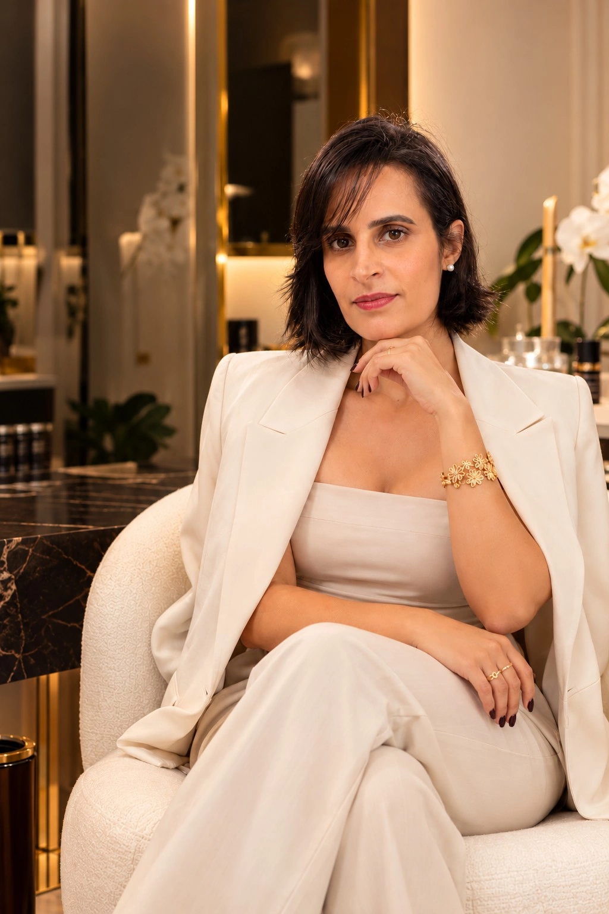
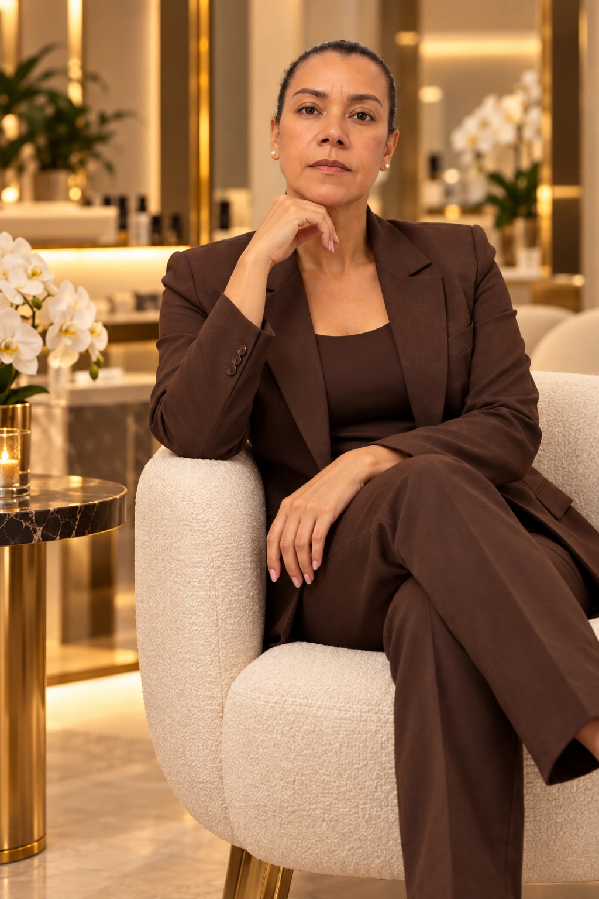

Conhecimento que encontra cuidado.
Formação, avaliação individualizada e uma experiência de atendimento orientada por técnica, acolhimento e atenção aos detalhes.

Maria Luisa Franco de Assis — Mel.
Mel atua na área da estética há aproximadamente 10 anos. Sua trajetória reúne Estética e Cosmética, formação biomédica e uma visão de atendimento baseada em tratamentos personalizados, anatomia, fisiologia e planejamento individualizado.
Conheça a MelConhecimento técnico ganha sentido quando encontra escuta, avaliação e planejamento.Princípio de atendimento

Alice Rocha.
Alice Rocha é Biomédica Esteta, formada há mais de 10 anos em Estética e Cosmetologia e há 4 anos em Biomedicina. Sua atuação reúne tratamentos faciais e corporais com uma abordagem técnica e individualizada.
Entre as áreas informadas pela profissional estão renovação e remoção a laser de tatuagens e micropigmentação de sobrancelhas, tratamentos para estrias, cicatrizes e acne, além de cuidados corporais.
Conheça os tratamentos
Katia.
Katia está em formação acadêmica na área de Estética e integra a equipe da BC enquanto constrói sua trajetória profissional com dedicação ao aprendizado, ao cuidado e aos fundamentos da estética.
Sua formação está em andamento, unindo conhecimento acadêmico e vivência de equipe em um ambiente orientado por atenção, acolhimento e evolução profissional.
Da avaliação ao planejamento.
A proposta institucional da BC coloca a avaliação antes da escolha do procedimento. A conversa sobre objetivos, características individuais e possibilidades orienta a construção do plano de cuidado.
Essa lógica ajuda a manter a comunicação da clínica longe de um catálogo genérico e mais próxima de uma experiência baseada em confiança.
Conhecimento
Formação e base técnica apresentadas com clareza.
Avaliação
Compreender a pessoa antes de definir possibilidades.
Planejamento
Organizar a jornada com atenção à naturalidade e aos detalhes.
Comece com uma avaliação individualizada.
Converse com a BC sobre seus objetivos e entenda quais possibilidades fazem sentido para o seu caso.